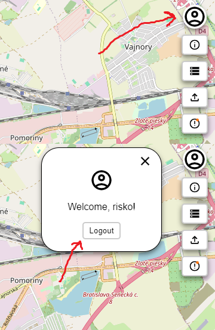

To logout, click on the user button and then click on the logout button.
Click on the upload button

Upload only a zip file, which contains directories "Walk" and "Drive". The zip can contain both, or just one of the mentioned directories.
ZIP Structure:
|-- Drive
| |-- 33718.csv
| |-- 31783.geojson
|-- Walk
| |-- 93293.csv
| |-- 44352.csv
| |-- 764555.geojson
| |-- 354852.csv
CSV structure
The csv structure must contain 2 columns, which names contain "lat" and "lon", for example:
lon,lat lattitude,longitude INDEX,TAG,DATE,TIME,LATITUDE N/S,LONGITUDE E/W,HEIGHT,SPEED,HEADING,PRES,TEMP
17.07299,48.151611 17.07299,48.151611 1,T,240215,144813,48.166046N,17.178055E,132,0.4,356,1007.7,23
17.073095,48.151878 17.073095,48.151878 2,T,240215,144815,48.165985N,17.178095E,127,5.8,54,1007.5,23
17.073084,48.15184 17.073084,48.15184 3,T,240215,144816,48.165962N,17.178116E,130,4.0,97,1007.5,23
17.073084,48.151733 17.073084,48.151733 4,C,240215,144816,48.165962N,17.178116E,130,4.0,97,1007.5,23
17.073048,48.151672 17.073048,48.151672 5,T,240215,144817,48.165993N,17.178131E,124,3.5,58,1007.6,23
17.073011,48.151714 17.073011,48.151714 6,T,240215,144818,48.165989N,17.178129E,132,3.6,50,1007.5,23
GEOJSON structure
{
"type": "FeatureCollection",
"features": [
{
"geometry": {
"coordinates": [
[
17.073124,
48.152729
],
[
17.073124,
48.152729
]
],
"type": "LineString"
},
"properties": {},
"type": "Feature"
}
]
}